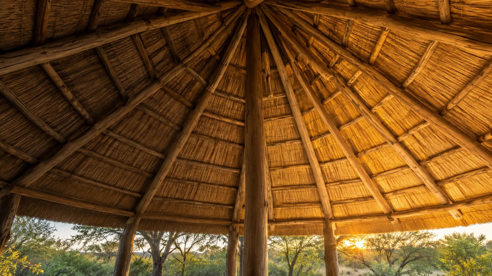
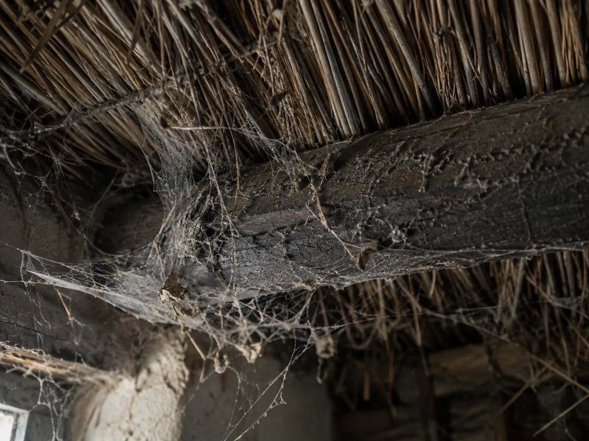
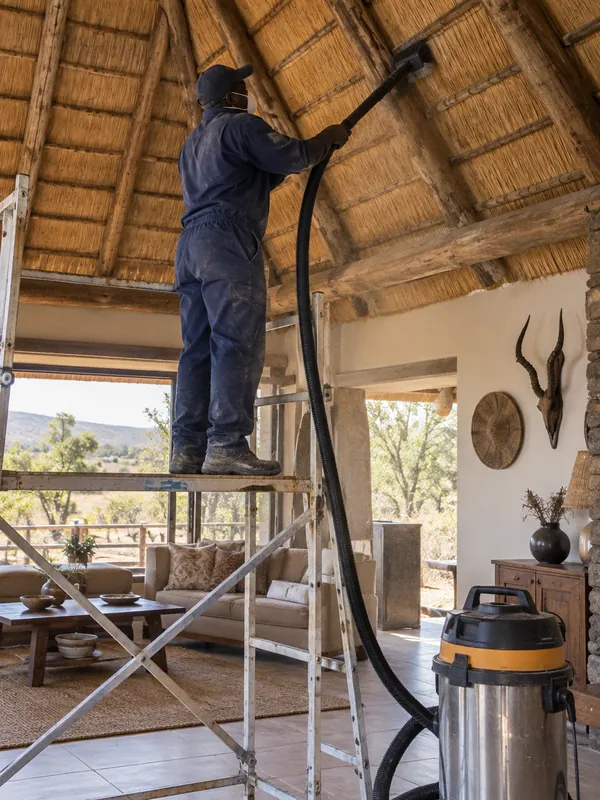
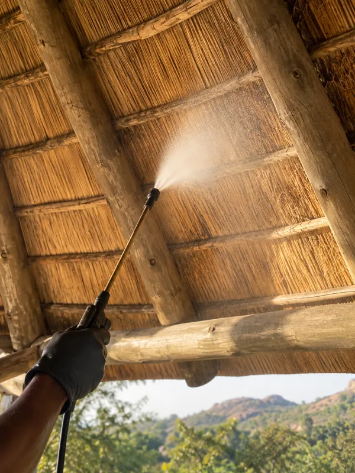
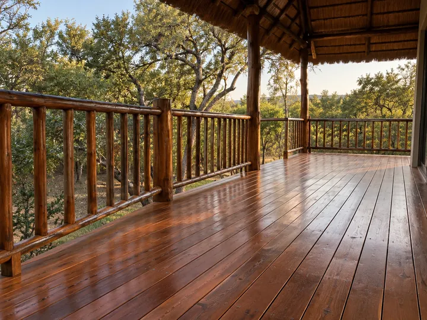
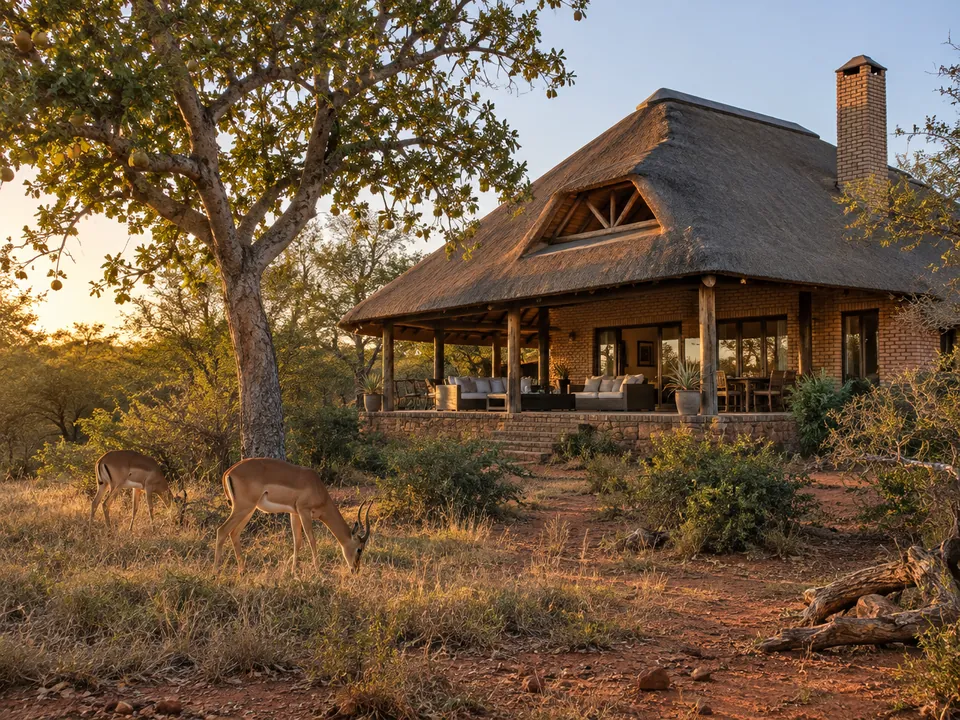

Thatch cleaning and fumigation
We clean and fumigate your thatch, ridding it of dust, spider webs, mites, reptile droppings and pests, so it looks and smells new.
- Fumigation
- Deep vacuuming
- Freshener mist
Fumigation and deep cleaning for thatched homes and lodges in Marloth Park, with the owner on every job.

Over the years a thatch ceiling quietly collects what you would never let into the rest of the house. Most of it sits just above your head, and some of it falls.
Thatch Clean takes all of it out, then leaves the room smelling fresh. Andre Wiid and his team are based right here in Marloth Park.
The same careful process on every job, done with the right equipment so nothing is missed and nothing is damaged.
We start with a full fumigation treatment to kill the mites and insects hidden deep inside the thatch. It is left to work overnight for the best result.

A three-motor vacuum with serious suction pulls out what has built up between the grass and the beams. Specialised ladders let us reach every corner safely.

To finish, a refreshing mist treatment clears lingering odours and leaves your home or business smelling clean. A deep clean you can see, and a freshness you can feel.
Thatch is where we started. The timber that holds it up, and the rest of the house, get the same attention.

We clean and fumigate your thatch, ridding it of dust, spider webs, mites, reptile droppings and pests, so it looks and smells new.

We clean, repair and treat timber to bring back its strength, safety and beauty, and protect it against rot, weather and wear.

From small fixes to regular upkeep, we keep your home in top shape.
Andre supervises every clean himself, from the first look at your thatch to the final mist. Fast, reliable and professional, and the quote is free.
A very professional team indeed! They cleaned the thatch thoroughly and went the extra mile.
Very impressed with the professionalism from Andre and his team. It has made such a difference in daily cleaning.
Brilliant, and highly recommended. New customers are welcome to come and view their work.
Bush homes deserve ceilings you can relax under. If your thatch has not been cleaned in a while, Andre will come and take a look.
Get a free quoteAnything else? Andre is a WhatsApp away on 082 563 1277.
It runs over two visits. Fumigation goes in the day before and is left to work overnight, then the deep vacuum and freshener mist follow the next day. Andre gives you the timeline with your quote.
Yes. Send a WhatsApp or call, and Andre will arrange to look at your thatch and give you a price. There is no charge for the quote.
Yes. The same process works for homes, lapas, lodges and businesses with thatch ceilings.
Yes. We clean, repair and treat wooden beams, decks and other timber, protecting it against rot, weathering and wear.
Andre Wiid and his team. Andre supervises every job himself.
Tell us a little about your thatch and we will get back to you to arrange a time to look.